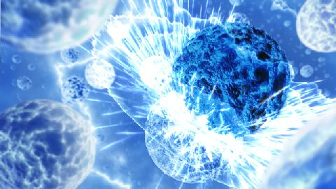
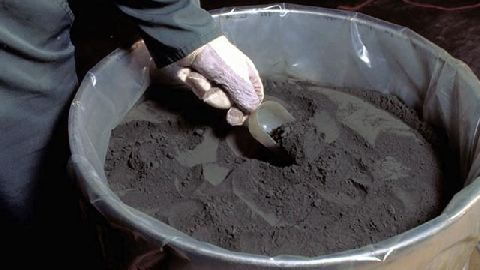
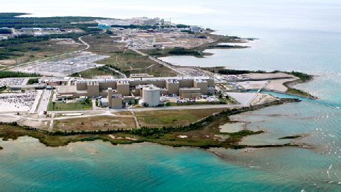
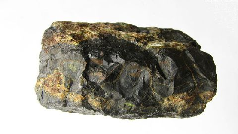
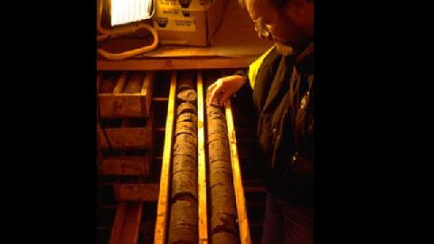

Mythe ou réalité :
La vie nucléaire au Canada
English
Commencez le défi!
Il est impossible de maîtriser une réaction nucléaire en chaîne.
C'est un mythe! Tous les réacteurs nucléaires sont dotés de systèmes permettant de maîtriser la réaction en chaîne qui se produit lorsque les neutrons libérés par la fission d'un atome d'uranium provoquent la fission d'autres atomes. Tous ces systèmes bloquent le passage des neutrons.
Les gisements d'uranium les plus riches du monde se trouvent dans le nord de la Saskatchewan.
C'est une réalité! Quatorze pour cent des ressources d'uranium connues dans le monde se trouvent dans le nord de la Saskatchewan. Leur teneur est plus de 100 fois supérieure à la moyenne mondiale.
La centrale nucléaire la plus puissante d'Amérique du Nord se trouve en Ontario.
C'est une réalité! Avec une puissance de 4 660 MW, la centrale nucléaire de Bruce Power, située sur la rive du lac Huron, en Ontario, est la plus puissante d'Amérique du Nord.
Il y a de l'uranium dans votre cour arrière.

C'est une réalité! Dans la cour arrière type au Canada, on trouve environ 300 grammes d'uranium dans la couche superficielle d'un mètre de sol.
On peut seulement trouver de l'uranium dans les roches.
C'est un mythe! On trouve des traces d'uranium partout dans le monde, notamment dans les aliments que nous consommons et dans notre propre corps.
Le rayonnement peut être utilisé pour ralentir le mûrissement des fruits et légumes.

C'est une réalité! Le rayonnement est l'un des outils les plus utiles en science et en agriculture de nos jours. Il a des utilisations fort variées, notamment les traitements médicaux, la stérilisation de l'équipement et des outils et pour déterminer l'âge des objets.
La prospection d'uranium entraîne un niveau de rayonnement dangereux.
C'est un mythe! Les méthodes de prospection d'uranium habituelles, par exemple le prélèvement de petites carottes de forage, présentent un risque négligeable, voire nul d'accroître l'exposition aux rayonnements, y compris ceux émis par le radon.
Les fabricants de boissons gazeuses utilisent des radio-isotopes pour contrôler la quantité de liquide dans les bouteilles.

C'est une réalité! Toute une gamme d'appareils de mesure font appel à des radio-isotopes, notamment les systèmes utilisés dans l'industrie des boissons gazeuses.
La population est constamment exposée aux rayonnements.

C'est une réalité! Les rayonnements sont partout autour de nous. Chaque jour de notre vie, nous y sommes exposés sous une forme ou une autre. Plus de 85 % des rayonnements auxquels la population est exposée sont d'origine naturelle.
La définition d'« installation nucléaire » qui figure dans la Loi sur la sûreté et la réglementation nucléaires englobe les mines et les usines de concentration d'uranium.

C'est une réalité! Un permis de la CCSN est exigé pour les activités de préparation de l'emplacement, de construction, d'exploitation, de déclassement ou d'abandon portant sur une mine ou une usine de concentration d'uranium.